机床功能介绍
砂轮修整
具体参数设置请参考修整界面
新砂轮修整
- 打开加工选择界面右侧选项栏的内螺纹
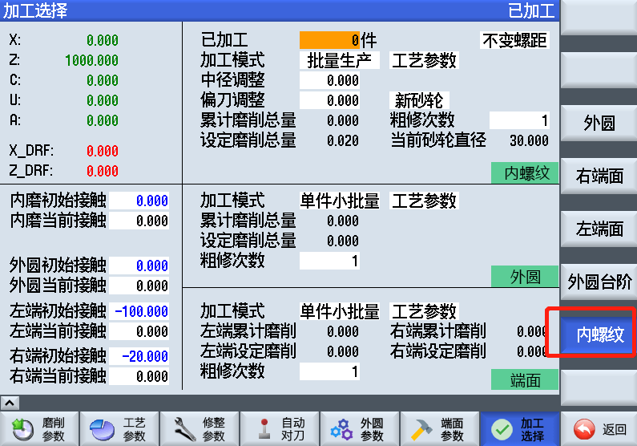
- 打开修整界面
- 选择成型X/XZ插补修整
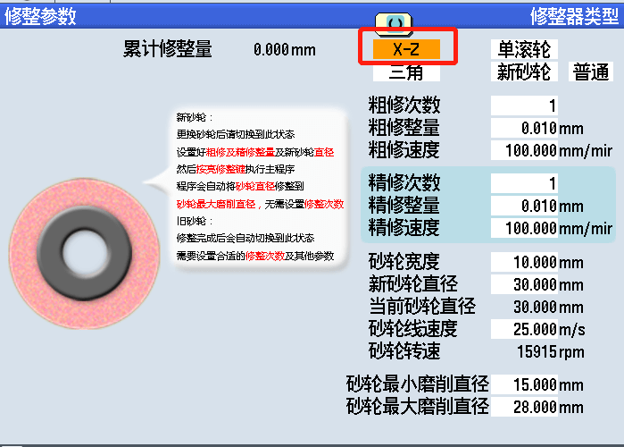
- 选择修整齿形(XZ修整器下设置)
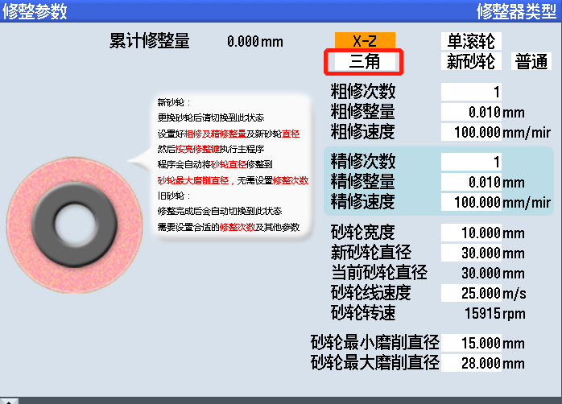
- 打开滚轮/滚压轮界面
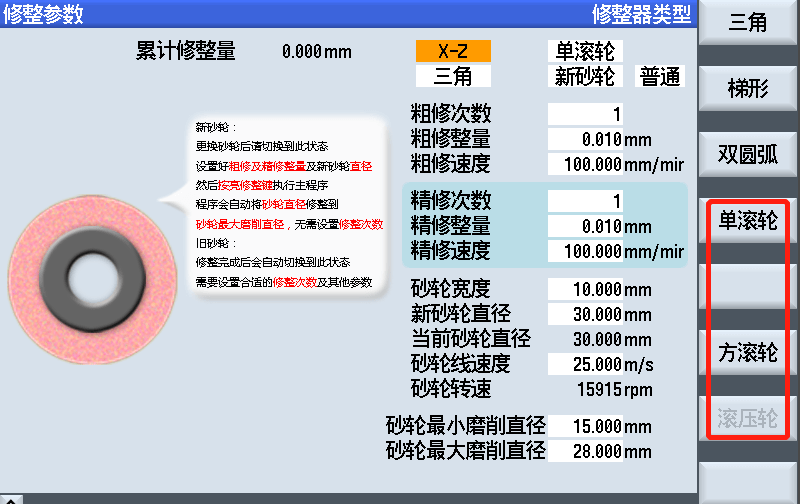
- 设置修整中心距和修整中心两个参数，设置方法请点击对应链接
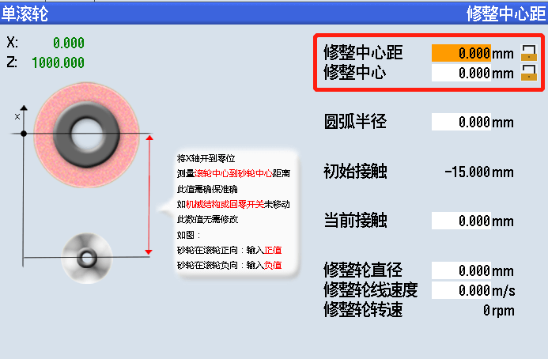
- 根据实际情况设置其他参数
- 返回修整界面
- 选择新砂轮
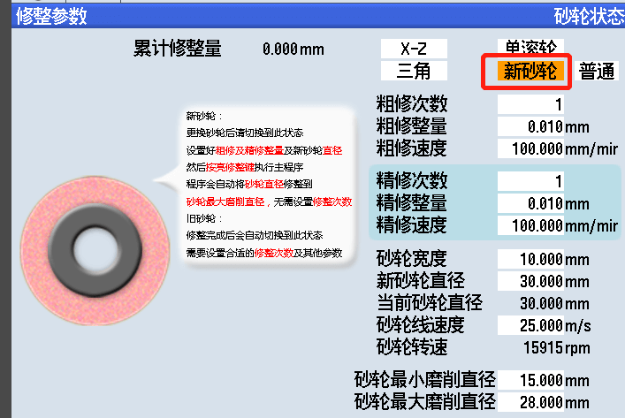
- 设置修整粗修/精修进给参数
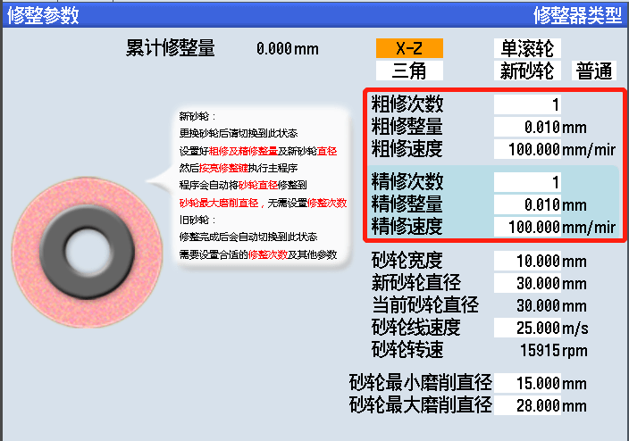
- 设置砂轮宽度(XZ修整器下设置)
- 设置新砂轮直径(比实际直径稍大0.2mm左右合适)
- 设置砂轮线速度(通常22m/s合适, 根据砂轮大小适当调整)
- 设置砂轮最小磨削直径(根据(磨杆直径+齿高*2)适当放大设置, 砂轮小于此直径后报警)
- 设置砂轮最大磨削直径(新砂轮修整时从新砂轮直径直接修整到此直径)
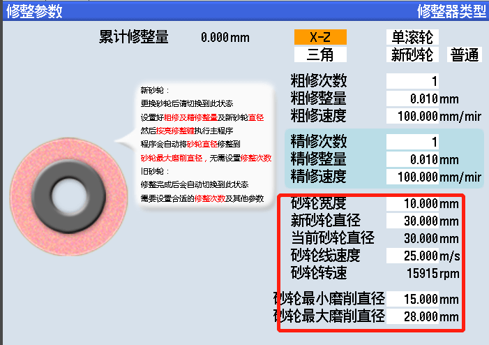
- 进入齿形界面设置齿形参数(XZ修整器下设置)
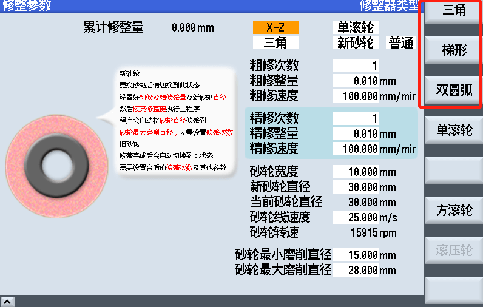
- 点亮修整键后启动程序
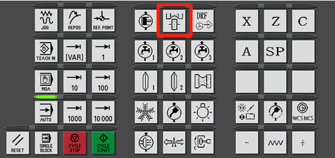
旧砂轮修整
- 设置粗磨次数和精磨次数
- 点亮修整键后启动程序
如果启动后机床报警无法启动可能原因
- 磨削参数未设置合适工件螺距/左端工件右端/退刀位置/工件磨削起始，可临时设置大概值完成修整
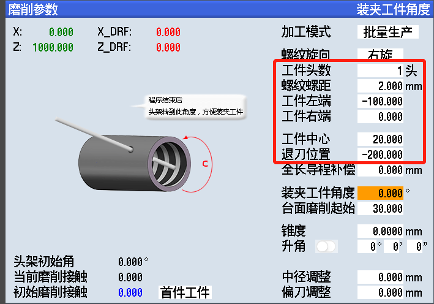
- 修整中心距/修整中心参数未设置正确，查看是否正负号写反